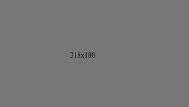
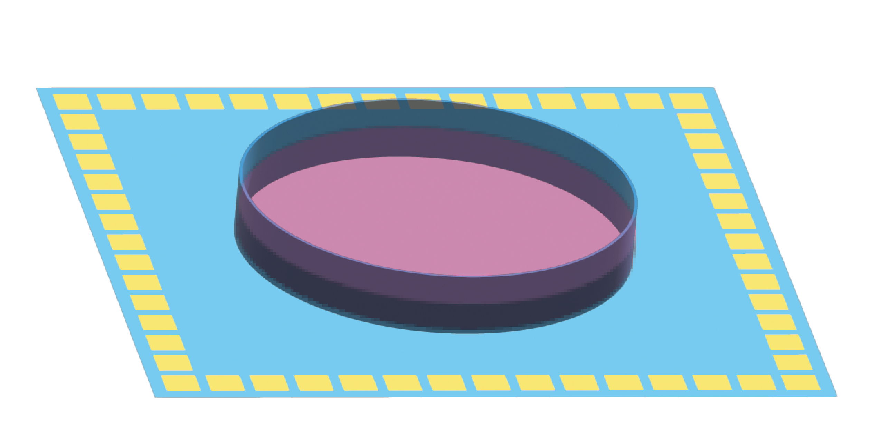
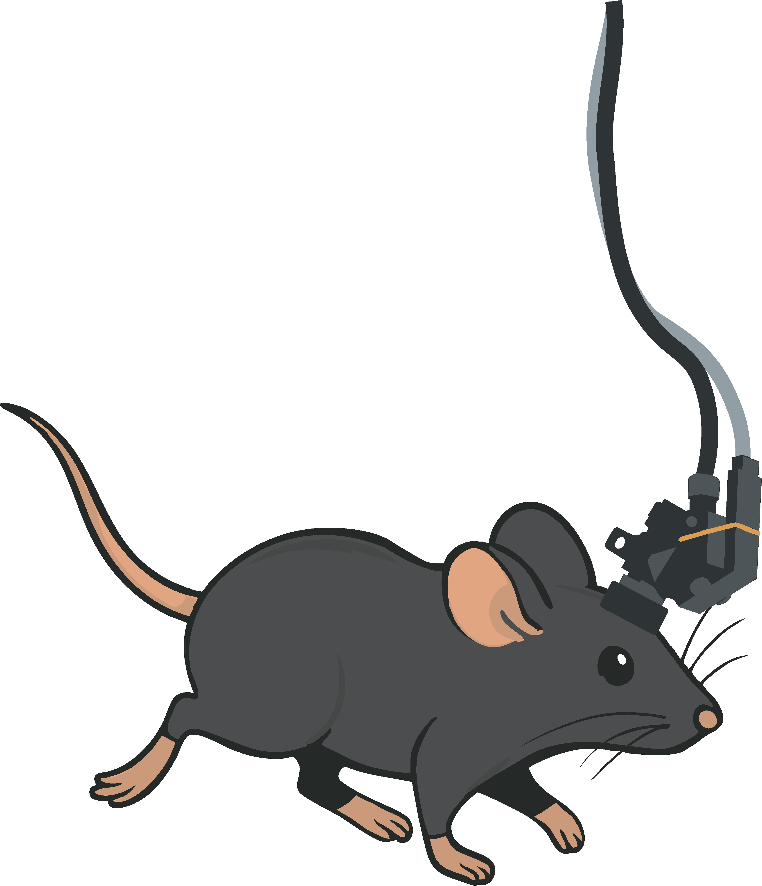

Neuroscience | Behavior | Engineering
Neural dynamics, behavior, and experimental systems.
A focused entry point into research, guides, software, and laboratory tools for systems neuroscience.
Site Overview
The seven site sections shown in the brain map
Each section below mirrors one of the regions highlighted in the schematic so the structure of the site is visible before you start clicking through.

About
Research background and perspective
Background, scientific framing, and the questions that connect the rest of the site.
Learn more
Publications
Papers and conference work
Journal articles and proceedings collected into a cleaner reference list with direct source links.
View publications
Research
Population dynamics and behavior
Population dynamics, internal state, and behavior in freely moving systems.
Explore research
Guides
Interactive teaching pages
Hands-on guides for calcium imaging, compression, and dynamical systems in neural data.
Browse guides
Software
Open computational tools
Open-access software for translating neural dynamics and behavior into usable analysis workflows.
Open software
3D Printing Tools
Fabrication-ready lab parts
Printable components and practical build resources for assembling experimental infrastructure.
View printing tools
Behavioral Platforms
Experimental systems for behavior
Behavior rigs and platform concepts for scalable neuroscience experiments in richer environments.
See platforms